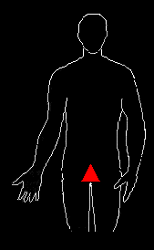
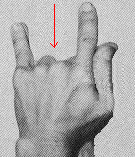
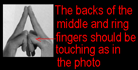

To open the base chakra, place your hands in the position shown in the photo, like the sign of the horns. Your finger pads should be touching and your thumbs should be touching side by side down to the fleshy part known in palmistry as the "Mount of Venus." This mudra produces a heat sensation in the hands and stimulates the base chakra. Don't worry if you cannot feel the heat sensation as this takes sensitivity. *PLEASE NOTE: THE HAND POSITIONS ARE OPTIONAL AND NOT MANDITORY. SOME OF THESE MUDRAS MAY BE DIFFICULT FOR THOSE WHO HAVE LARGER HANDS. IF THIS IS THE CASE, JUST SKIP THEM. THEY ARE NOT NECESSARY.
1. Drop your chin to your chest.
2. Inhale and fill your lungs, and with the exhale, vibrate LAUM. LLL-AH-AH-AH-UUUU-MMMM Click Here for LAUM Mp3 Audio
3. While exhaling try to imagine/feel your base chakra as very hot and visualize it about the size of a pea, opening and expanding into a vortex. Spin this vortex. Continue visualizing your chakra lighting up into red/gold and expanding with a bright white/gold fire, about the size of a silver dollar coin in diameter and imagine the feeling of it growing hotter as it gets brighter.
The LAUM vibration should be done seven times.
Align your base chakra point facing upwards as you did with your sacral chakra.

 
BACK TO MAIN POWER MEDITATION PAGE
© Copyright 2005, 2007, 2016, Joy of Satan Ministries;
Library of Congress Number: 12-16457